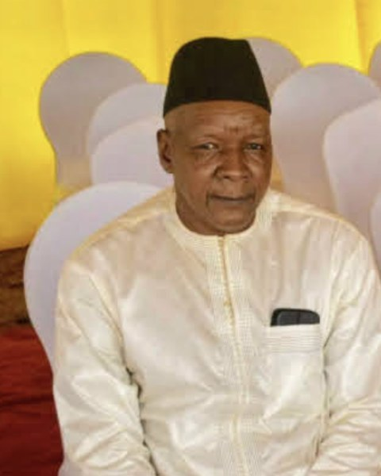

INSTITUT CULTUREL DU MALILONNIYA GUÈNDÈ
Le Conseil d'Administration est l'organe collégial chargé de la gouvernance, de l'orientation stratégique, de la supervision et du contrôle de l'Institut Culturel du Mali – Lonniya Guèndè. Il définit les grandes orientations de l'ICM, veille à la cohérence de ses programmes avec sa mission, et supervise la Direction générale dans le respect des Statuts et du Règlement intérieur de l'Institut.
Composé de onze membres choisis pour leur compétence professionnelle, leur expérience institutionnelle et leur connaissance de l'Afrique et de ses patrimoines, le Conseil se réunit au moins une fois par an et peut constituer des comités spécialisés sur les finances, les programmes, les partenariats et la gouvernance.

Natif de Bamako, Mamadou Cherif Haidara est juriste de formation et cadre supérieur retraité du secteur bancaire, où il a exercé pendant près de trente ans. Sa carrière l'a conduit à représenter des institutions bancaires en Afrique centrale ainsi qu'en France, lui conférant une expérience internationale approfondie des enjeux financiers et institutionnels du continent.
Parallèlement à son parcours bancaire, il a occupé des fonctions diplomatiques en Afrique centrale et s'est engagé dans la vie sportive malienne en dirigeant le Stade Malien, l'un des clubs historiques du football national. Footballeur accompli dans sa jeunesse, il a évolué au sein de l'équipe nationale du Mali avant de poursuivre une carrière professionnelle en France.
Reconnu pour son engagement philanthropique, Mamadou Cherif Haidara met aujourd'hui son expérience et son réseau au service de l'Institut Culturel du Mali. Passionné d'agriculture, de voyages et d'histoire, il apporte au Conseil une vision à la fois enracinée dans les traditions maliennes et ouverte sur les dynamiques internationales.